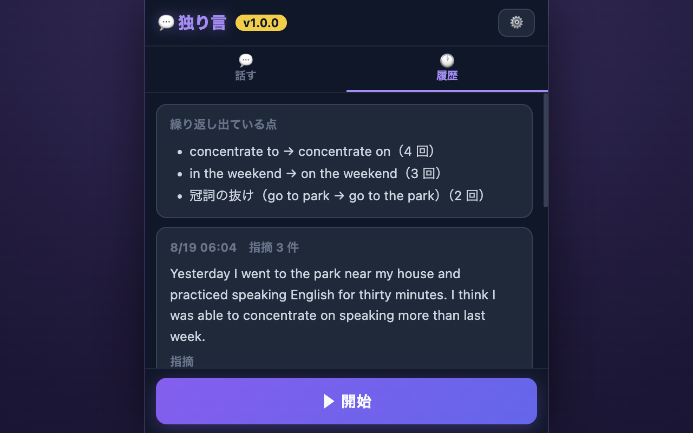

「▶ 開始」を押して英語で話し、「■ 停止」を押すだけ。話した内容がその場で文字になり、AI が指摘と音読用の修正版を返してくれる流れのデモです。

練習の記録は履歴に残ります。何度も出ている癖は回数つきでまとまるので、次に話す前に「今日はここに気をつける」が分かります。
英語で独り言を話すと、AI が添削してくれる拡張機能です。言い回し・語彙・文法の指摘と、音読用の修正版、よかった点が返ってきます。もともとは「まもるくん」の中の英語学習モードだったものを、英語練習に集中できる単独の拡張機能として作り直しました。
※ 内蔵の AI は小さなモデルなので、指摘の精度にはまだ限界があります。音声認識の聞き間違いが残ることもあります。AI の進化やアップデートに合わせて、改善を続けていきます。
作った経緯や、独り言という練習法について note に書いています：誰も直してくれない英語の独り言、Claude Code で作った拡張機能に直してもらっています